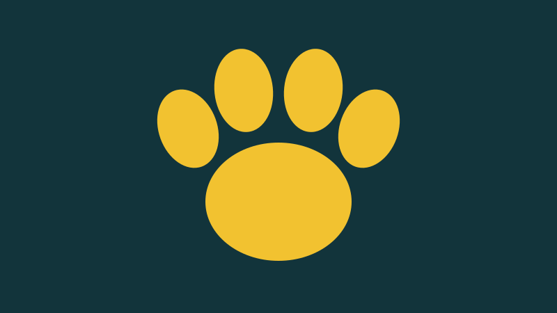

Resgate e Acolhimento
Voluntários atendem denúncias de animais abandonados ou feridos, levam ao veterinário e mantêm cada um em segurança até a recuperação.
Como participar
Ajude no transporte, no plantão de resgate ou no cuidado diário. Veja como ser voluntário ou como doar.